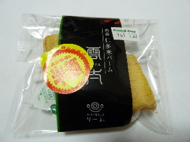
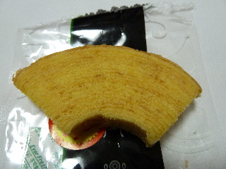
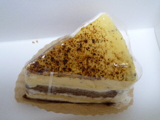
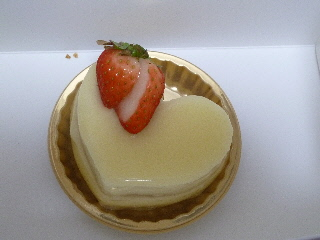

リールのバームクーヘンが半額です。
2013/02/19
お買い得な商品をグッディーでみつけました。

仁多米バームクーヘンです。おつとめ品で半額です。
通常150円です。小さいカットでその値段なので、高級ですね。 パッケージもなんか立派です。

お米で作っただけあって、普通のバームクーヘンとはどこか違いますね。 しっとりとした食感が独特でした。
リールさんのバームクーヘンはまだ食べた事がなかったので、食べれてよかったです。
島根県出雲市矢野町920-1
2013/02/19
お買い得な商品をグッディーでみつけました。

仁多米バームクーヘンです。おつとめ品で半額です。
通常150円です。小さいカットでその値段なので、高級ですね。 パッケージもなんか立派です。

お米で作っただけあって、普通のバームクーヘンとはどこか違いますね。 しっとりとした食感が独特でした。
リールさんのバームクーヘンはまだ食べた事がなかったので、食べれてよかったです。
2010/12/26
仁多米バームクーヘンのお店なので、バームクーヘンを買うのが一番良いとは思ったんですが、同じくらいの値段でクリームの乗ったケーキがあると思うと、ケーキのほうがいいかな？って思ってケーキを買ってしまいました。

ブリュレです。カスタードクリームが沢山あるケーキでした。シンプルで素朴な感じがしました。

こっちは名前を忘れました。中にはライチのジュレが入っていました。とっても甘かったです。
次に買う機会があったらバームクーヘンを買おうと思います。
2010/07/10
今日は窯出しジュークリーム通常180円が80円、くりーみープリン200円が100円とお買い得な日だったのでお店に行ったんですが、売り切れてました。
残念です。
ちょっと悔しいので、次の安売りで行ける機会があったら絶対朝一で行こうと思いました。
今日はガッカリ感が強かったので、何も買わずに帰りました。